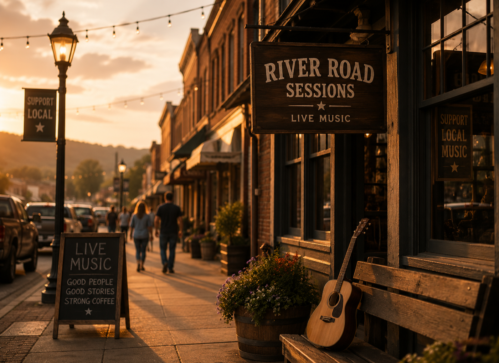

Song Story Feature
Interview-led writing that explains the lyric, lived experience, creative spark, and emotional center of a single or album track.
Editorial song stories for country writers and artists
Donna Block helps songwriters, independent artists, and country music creatives turn the meaning behind a release into warm, readable editorial copy for EPKs, websites, socials, venue pitches, and fan connection.
Give listeners, bookers, and press contacts a clear reason to care about the song.
Create polished story material that works beyond one post or release announcement.
Connect songs, venues, writers, makers, and fans through readable community storytelling.
Services
Each piece is shaped around the reader's first question: why should I listen, follow, book, feature, or share this now?
Interview-led writing that explains the lyric, lived experience, creative spark, and emotional center of a single or album track.
Clear bios, profile copy, and press-page language that introduces the songwriter's voice, roots, influences, and current chapter.
Editorial-style stories for venues, makers, music nights, small businesses, and community spaces close to the country scene.
Deliverables
Packages
These are simple starting points. Donna can recommend the best fit after reviewing the song, timeline, and goals.
For a single
A focused feature for one song, built around the lyric, backstory, recording, and emotional reason the track exists.
Good for release pages, EPKs, socials, and email pitches.For an artist
A polished bio or profile that gives bookers, press contacts, and new listeners a quick understanding of the artist.
Good for websites, press kits, venue outreach, and one-sheets.For a scene
A local story for a venue, songwriter night, maker, small business, or music-centered community project.
Good for local promotion, partnerships, and audience-building.Typical next step: send links and timing, then Donna confirms fit, materials needed, and expected turnaround.
Writing samples
Use these as a feel check for tone: conversational, interview-led, specific, and built around the story behind the music.
A release feature centered on love, belonging, and the journey back home.
Read sampleA songwriter-focused interview connecting personal experience, Nashville, and artistic direction.
Read sampleA personal music story that connects identity, craft, roots, and the reason the song matters.
Read sampleProcess
Share the track, lyrics, artist bio, release plan, goals, timeline, and any background Donna should hear first.
Donna identifies the strongest thread: the lyric, the turning point, the hometown tie, the collaboration, or the reason this release matters now.
The finished feature is structured for readers and polished enough to support EPKs, websites, venue outreach, socials, and release promotion.

About Donna
Donna Block helps independent artists turn lyrics, memories, creative decisions, and new releases into readable features that feel sincere instead of manufactured. Her work can support a release campaign, an EPK, social sharing, a press page, or a pitch to venues and collaborators.
The tone can flex from classic country warmth to modern Americana polish, while keeping the message direct enough for busy readers, fans, and bookers to understand and share.
Formats
A profile for new singles, comeback stories, first tours, and artists building an audience one honest connection at a time.
A concise feature centered on the lyric, the life behind it, the recording, the collaborators, and the reason the song exists.
A local feature for venues, listening rooms, makers, small businesses, and places whose stories help the music scene feel alive.
Good fit
Bring the song, the story, the release plan, and the links. Donna can help shape the angle, but the strongest features start with a clear creative moment and a reason the song matters.
Music links, lyrics if available, artist bio, release date, social links, press goals, and any backstory that explains why this project matters.
Yes. Features are written so songwriters can reuse the copy in an EPK, website, email pitch, social post, booking note, or venue conversation.
This is writing support, not PR representation, playlist pitching, management, ad buying, or guaranteed media placement.
Contact
Include the artist or business name, the release or story angle, ideal timing, lyrics if available, and the best links to review. Donna will respond with next steps.